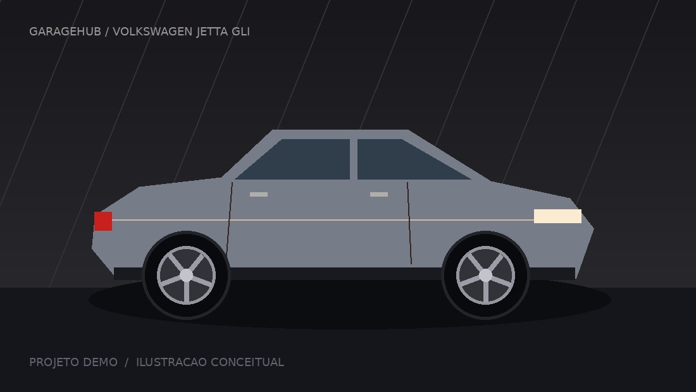

Volkswagen / 2021
Jetta GLI
2.0 TSI · DSG 7 marchas · Cinza

A história do carro
Projeto de uso diário, com manutenção em dia e evolução gradual. Filtro esportivo: aproximadamente +4 cv. Remapeamento: aproximadamente +35 cv. Medições e fotos ilustrativas da demonstração.
LU lucas_gtiSão Paulo, SP
NÚMEROS QUE CONTAM HISTÓRIAS
Última medição: 28/09/2026
Desempenho
Evolução do projeto
O gráfico está indisponível. Consulte o histórico completo abaixo.
Ver histórico de medições
| Data | cv | Nm | 0–100 s | km/h | km/l |
|---|---|---|---|---|---|
| 16/05/2026 | 230 | 350 | 6,7 | 250 | 10,5 |
| 15/07/2026 | 234 | 357 | 6,62 | 251,4 | 10,49 |
| 28/09/2026 | 269 | 418,2 | 5,99 | 263,4 | 10,36 |
Modificações 2
Remapeamento (+35 cv estimados)Motor · 28/09/2026
R$ 2.500,00
Filtro esportivo (+4 cv estimados)Motor · 15/07/2026
R$ 680,00
IMAGINE O PRÓXIMO PASSO
Modelo genérico · arraste para girar
Garage Studio 3D
GIRE / APROXIME / EXPLORE